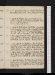
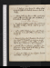

- About
- Diary
- People
- Events
- Reading
- Writing
- Meals
- Meetings
- Search

Jan. 1, 1812. W. Write to C C & West. Call on Hume: Burr calls.
2. Th. Call on Lambertn, Jervis, Lewisn, Curtisn, Lambn & Hume: Newton calls: Lecture, w. F, M & J; adv. O’Brien, &c. meet Hazlite. Homme de Qualité, p. 88.
3. F. Call on Curtis & Denley: seek Wilkins: sup at Lamb’s.
4. Sa. Write to Patrickson & Faulder. Homme de Qualité, p. 112. Tate, Fk & Rodd call.

Jan. 5. Su. Antony, acts 1 & 2: Homme de Qualité, p. 130. Dine at Liston’s, w. 4 Humes, miss Tyrer & M J.
6. M. Write to Shelly. Antony, acts 3 & 4. H Boinville calls: H & P Hopwood at tea; adv. Hopwood . write to Tuthill. Homme de Qualité, p. 160.
7. Tu. Antony, fin. Rousseau calls: call on Poole & Dr Wilkins: Lambs sup. Parliament meetse.
8. W. Case, 4 pp. Jonathan Scott, p. 21. H Boinville dines.
9. Th. Case, 4 pp. Lecture, w. F,M, J & W; adv. O’Brien, A Taylor, Poole, &ce: Poole sups; adv. Burr.
10. F. Browne, Quincunx, c. 1, 2, 3. Call on Harris. Deep fog.
11. Sa. St Francis, p. 42: Camden, Remains, çala. Lambert & Burr call.
Jan. 12. Su. Letter to L White, 3 pp. Orchestrae: St Francis, p. 88.
13. M.Toralva, p. 2/2. Write to Shelley. Pilcher & son arrive: Burr at tea: Lecture, w.H H, F, M, J & W; adv. Poole, O’Brien, &ce: H Robinson sups.
14. T. Toralva, p. 1, 2. Warbeck, act 1. Pilcher dines.
15. W. Toralva, p. 4. Warbeck, acts 2, 3, 4.
16. Th. Legend, p. 5. Palaye, p. 30. Lecture, w. H H, F, M & J; adv. O’Brien, Stoddart, Girle, Wilson, Curtis, &c.e
17. F. Legend, p. 7. Warbeck, act 5: ’Tis Pity, act 1. Rousseau, R Taylor & Newton call: Pilcher dines.
18. Sa. Write to Russel. ’Tis Pity, fin.

Jan. 19. Su. Letter to L White, p. 4, 5. Broken Heart, acts 1, 2. E F & W G call: Burr dines: Poole sups. P P, the Bombay, ca. Montg. Hamilton.
20. M. Legend, p. 9. Write to Shelley & Curran. A Curran calls: Lecture, w. H H, F, M & J; adv. O’Brien, (Moira, Byron, Rogers) Waller &ce.T T calls.
21. Tu. Legend, p. 11. Call on Jo G; adv. N & W.
22. W.Write to L White. Orinda to Poliarchus, pp. 226. Burr calls: mrs Collier’s ball.
23. Th. Measures of Friendship, p. 65. Call on Jas White: Burr calls.
24. F. Legend, p. 12. Call on Hume, & (w. M J) on Burr. meet Jervis: H Robinson at tea. T T marriede.
25. Sa.Legend, p. 13. Write to Meyler & Baker. Broken Heart, act 4. Fks call: call on Waldron.
Jan. 26. Su.Broken Heart, act 5. Dine at Collier’s, w. Coleridge, Rough, Hamond, Toller, Goodwin, Wright, H Robinson, miss Gilbert & Alvado. Herbert of Cherbury, p. 82.
27. M. Lover’s Melancholy, acts 1, 2, 3. Lecture, w. M J, H H, F, M & J; adv. Hamond, Buchan, O’Brien (Heber, D’Israeli), M Burney, Girle, Walter, &c.e
28. Tu. Notes for Legend. Lover’s Melancholy, fin. Call on Pocock, &, w. M J, on Burr. Write to Patrickson.
29. W.Love’s Sacrifice. Burr & Hamond call. Write to Miller, A S.
30. Th. Legend, p. 13. Witch of Edmonton, acts 1 & 2: Cherbury, p. 102. Call on Macmillan, J Taylor, Hume & Roughn: T Tcalls: H R sups.
31. F. Witch of Edmonton, fin. Write to Hill. Call on Place & Hume: theatre, Virgin of the Sun, w. M J, Poole, mrs Dickons & miss Briggse.
Feb. 1. Sa. Call on Jervis: sup at Lamb’s, w. M J, M, J; adv. H Robinson.
Feb. 2. Su.Write to Place. Lady’s Trial. Lambs sup; adv. E Fk.
3. M. Cynthia’s Revels, act 1. Write to Place & Taylor, Norwich. Call on Lewis & Vaughann: Macmillan calls.
4. Tu.Write to Patrickson. Cynthia, acts 2, 3/2: Hume dines: Hazlit’s Lecture, w. do; adv. Girle, J Hazlit & H Robinsone.
6. Th.First Impressions, pp. 2. Measures of Friendship, p. 116 fin: Holy Dying, p. 14: King’s Qur, st. 46. E Fk at tea: H Robinson sups.
7. F.King’s Quair, fin. Call on Place: Burr at tea.G Peele, pp. 31.
8. Sa. Legend, 1 page. Call on Hamond & Hume.
10. M. Persiles & Sigismunda, p. 37. Expect Plce. P P sups & sleeps. call on Pocock.
11. Tu. Herbert, sir Thos, p. 88. Fables, çala. Hume dines: Milesna.
12. W. Fables, çala. Herbert, p. 144, fin. Tipper calls: call on Place: N G calls.
13. Th. Life of Berkeley, pp. 40. Place calls (estimates) & E Topping: call on H Boinville, T & C Tn.
14. F. Write to Patrickson. Burnet, on Rochr, pp. 132. Rough calls: call on Burr, w. M J.
15. Sa. Fox, revise. Burr dines: meet Collier & Creed.
Feb. 16. Su. 1806, 1 page.Carew, çala . M J dines at Lambert’s, Hampstead.
17. M.Carew, &c. L Eastwick, mrs King & Burr call. Write to Place, & Jervis. Call on Pocock.
18. Tu. Carew, &c.A Curran & Burr call: M Jones at tea. Gillet calls.
19. W. Write to Archer & Moore, Dublin. Call on Place; adv. Smith: Hamond at tea.
20. Th. Davenant, &c. Call on Tippern: Tipper calls: H Robinson sups.
21. F.Idea of Chas I, çala. Call on Place.
22. Sa. Temple’s Memoirs, pp. 172. Call on Place.
Feb. 23. Su. Rainbow, 5 pp. Roger Coke, çala. Burr dines.
24. M.Burnet’s Hamilton, p. 80. Place & Lambert call: Burr at tea: Tipper au soir.
25. Tu. Rainbow, p. 9, fin. Hamilton, p. 98. Burr & M call: R Taylor sups.
26. W.Accounts. Hamilton, p. 149. M Jones at tea.
27. Th. Accounts. Hamilton, p. 164. Call on Place, Wilsonn, Denley & Sutton: 3 Newtons call: call on Longdil.
28. F. Hamilton, p. 174. Call on Poole, Curtis, Gilletn, Goodbehere & Hamond: meet C Kemble: Tipper calls n: Burr dines: Hamond au soir.
29. Sa. Write to C C. Hamilton, p. 186. Call on Place, Gold, & Gillet twice: theatre, Julius Caesar; adv. Quin & Hille.
Mar. 1. Su.Write to Place. Caesar, çala. Call on Place{.} E Fk calls (M Lamb, Hoxton): Burr dines, & P Hd.
2. M. Write to Smirke. Place calls twice, tea: M calls: call of Theobald & Lambert: Jo G calls: H Robinson sups.
3. Tu. Letter to Shelley, p. 5. Place calls: theatre, w. M J, Julius Caesare.
4. W.Shelley, p. 7; send. Royal Slave, acts 1 & 2. Burr calls, au soir.
5. Th. Royal Slave, acts 3, 4, 5. Call on Cline, w. M, & on Place: A Harwood calls: Burr dines.
6. F. Holy day, çala. Burr calls: call, for him, on Bagster & Cuthel.
7. Sa. Hamilton, p. 228. Burr at tea: meet Jas White: M dines.

Mar. 8. Su. Cartwright, &c. Call on Place (adv. Lambert) & Lamb.
9. M. Write to Baker & Merridew. Call on Priestley, adv. T & C T: Hume dines: theatre, w. M M, M[or?]ville & Turn Out.eBradley absent
10. Tu. Persius, Sat. III. Place & Lambert call, from Hamond: Burr & Hume dine. E Fk & E Topping call.
12. Th. Write to B M. Persius, Sat. V: Hamilton, p. 248. Call on Hamond, Phillips & Jas White: Jas Smith calls: to the pla: Burr dines, to the playe.
13. F. Persius, Sat. I, v. 55. Place (from Hamond) & Burr: call on Hume: H Robinson at tea.
14. Sa.Write to Shelley. Persius, v. 75. Hamond & Burr call.

Aurora, capt. Potter Newbury Port, Massachusets Mar. 25, 1812 A B Mrs Alston Charles Town South Carolina
XVII
Mar. 15. Su. Persius, Sat. I (fin) & VI. E Fk & M Hopwood dine; adv. Burr.
16. M. Call on Place, Lambert, & Burr for M J,: Hogan calls. Write to Baker. Bacon, çala. M calls.
17. Tu. Eliot, Governor, çala. Hume dines; adv. Lb, Hamond & E F: calls, Burr, &T T.
18. W. Letter to Tuthill. Widow, acts, 1, 2, 3. Miss Plowden, E Topping & Burr call.
19. Th. Widow, fin: Wit without Money, act 1. Call on Place. J H Tooke dies .
20. F. Write to Fairly, Tuthill & West. Wit without Money, act 2. M & Burr call: call on S Hayesn: Hamond & Hogan at tea.
21. Sa. Write to C C. Burr calls.

Mar. 22. Su.Persius, Sat. I: Cherbury, p. 87. Dine at Hume’s, w. M J, Burr, Woodart & miss Pullman; adv. mrs Thomson; invité Lamb.
23. M. Cherbury, p. 173, fin: Agonistes, acts 1, 2, 3. Burr calls n. Topping at Pimlicoe
24. Tu. Legend, read.Agonistes, fin. Burr calls. Write to Curran.
25. W. Legend, read. Paradise Regd, B. I: May’s Lucan, çala: Trial of Cha. I, çala. Mills, Dadley & Jo G call: Burr dines. Call on Poole.
26. Th.Life of Chillingworth, p. 256. Burr, ppc, Place & Lambert (for Mullet) call: call on Place & Rodd. F, M & J dine at H Boinville’s.
27. F. Chillingworth, p. 372, fin. Call on Place, &Dawe (bust, &c); adv. E & O Fk, & Carlisle: H R sups. L Ht marriede.
28. Sa. Write to Saffery. Paradise Regd, B. II: Spenser, Mutabilitie; Eclogues, 10 & 11. E & O Fk, & 3 Hopwoods dine: call on Phillipsn.
Mar. 29. Su.Paradise Regd, B. III: F Queen, C. I: Cleveland, çala: Maccabees, çala. M Bouthron dines.
30. M. Write to Shelley. Paradise Regd, B. IV: F Qun, C. II, III. Call on Knowles: Humes call, & Ackermn.
31. Tu. F Queen, C. IV, V. Theatre, w. M J, M, J, W, & R & W Collier; Maid of Mill, & White Cate.
Apr. 1. W. Write to Patrickson & Hardinge. F Queen, C. VI. Call on Place: Hogan at tea: Grattan calls na.
2. Th. F Queen, C. VII: Bacon, Hen. VII, p. 104. Red Cross, Milton, çalae: call on Chapman, C H School.
3. F. F Queen, C. VIII. Dine at Hamond’s, Hampstead: Tipper calls: meet Faulder. (adv. Joanna Baillie)
4. Sa. F Queen, C. IX: Henry VII, p. 155.
Apr. 5. Su. F Queen, C. X: Resuscitatio, çala. Call on Place.
6. M. F Queen, C. XI. E Topping calls. Lamb, Theatralia, pp. 15. Capture of Badajoze
7. Tu. F Queen, C. XII. Hamond & Newton call.
8. W. F Queen, Book II, C. I: New Atlantis, p. 14. W H Vaughan calls.
9. Th. F Queen, C. II: Henry VII, p. 208. Jas Smith & Mrs Livie call, Bright & Davies.
10. F. F Queen, C. III. Call on Curtis & Place: meet Towers & Joyce: theatre, Quadrupedse.Rutts call.
11. Sa. Write to C C & Chaplin, Stortford. F Queen, C. IV. Rutt, & Davies, & H Robinson call.
Apr. 12. Su. F Queen, C. V: Henry VII, p. 248, fin. Call on Place: Imray dines: Jo G calls.
13. M. F Queen, C. VI. Call on mrs Collier (H R n) : Davies calls.
14. Tu. F Queen, C. VII. Call on Place: Rutt calls n: theatre, Sons of Erine.
15. W. F Queen, C. VIII: Bacon, Letters, çala. Call on Kenny & Macmillan: seek Sutton. Write to Hollis.
16. Th. F Queen, C. IX. Call on Lamb; adv. mrs Reynolds: H Robinson at tea.
17. F. F Queen, C. X: Milton’s Engd, p. 28. Frank Walsh, Mrs Topping & Hogan call: call on Hume.
18. Sa. F Queen, C. XI: Tenison on Bacon, pp. 104. Call on Spry, w. W.
Apr. 19. Su. F Queen, C. XII: Shakespear, Fol., çala: Imray & E Fk call: mrs Bouthron dines.
20. M.F Queen, Book III, C. I. Call on Cline, Spry & Knowles: Imray & H Robinson call.
21. Tu. F Queen, C. II. Meet Reynolds: Hogan at tea: theatre, Gamester, acts 1, 2, 3e. Emancipation rejd, Lords, 174 to 102e.
22. W. F Queen, C. III. Call on Barker, bookseller, & Waldron.
23. Th. Write to Taylor (Norwich), West (Cork), Baker & Pullen. F Queen, C. IV. Dine at Hamond’s, w. Place & miss Miller. Imray calls.
24. F. F Queen, C. V: Advancement of Learning, p. 26. Meet Place. Emancipation rejd, Coms, 300 to 215e.
25. Sa.F Queen, C. VI: Advancemt, p. 50. Hamond calls.
Apr. 26. Su. F Queen, C. VII. C Kennys, Colliers, H Robinson, F Ht & Hogan dine; adv. Lamb, R, J. & M Collier.
27. M. Temple’s Memoirs, p. 60. Coleridge calls: call on Hume. Write to Gillet.
28. Tu. F Queen, C. VIII. Tho. Rutt & Hamond call: call on Place & Rodd; adv.T J Hookham.
29. W. F Queen, C. IX. Letters to Patrickson & C C. Call on Wirgman & Lambert.
30. Th. F Queen. C. X. Write to C C. Weldon, p. 118. Place calls: M dines. Deliquiume.
May 1. F. Weldon, p. 226, fin. Hamond dines.
2. Sa. Write to Patrickson & Lofft. F Queen, C. XI. Place calls: call on Knowles: Jas White calls: H Robinson dines: theatre, w. him, Grecian Daughtere.
May 3. Su. Legend, medite. F Queen, C. XII. F. on justice. H & P Hd dine: Poole’s, music, Youngs surgeon, C Young, Dickons, Boltons, Horns, Gumfords, Webbs, Miller, Phipps, Pocock, miss Biggs, F & J
4. M. F Queen, Book IV, C. I. Persiles, p. 60. Call on Hume: Exhibition; adv. Perry, J Taylor, Dawe, Hayward, 2 Colliers & A Boinvillee. Place calls: Hogan sups.
15. Tu. Hogan calls: call on Hume: Coleridge, Hamond, Hume, Wirgman & Place dine; invité Lambert. Call on Knowlesn: E Topping calls, & E Fk
6. W. Persiles, p. 100. Aldis calls: E Topping at tea. Hamond calls.
7. Th.Legend, medite. F Queen, C. II. Call on Gillet, Philipsna & Place: M dines; adv. Hogan: theatre, Julius Caesar, acts 4 & 5e.
8. F. Persiles, p. 142. Call on Spry, w. W: Hogan sups.
9. Sa.F Queen, C. III: Geddes, p. 60. Cock, printer, calls, & Dr Adams.
May 10. Su. F Queen, C. IV: Granada, Vol. II, p. 66: Aul. Coq., pp. 205. Call on Place: H Robinson sups. Chaucer, Squire’s Tale.
11. M. F Queen, C. V, VI. Legend, p. 14. Meet Townsend: call on Place; adv. H Richter & Thomas: Hogan calls. Assassination of Percevale.
12. Tu. England, 1 page. F Queen, C. VII. Meet J Collier, Place, Hill & J Taylor: theatre, w. M J & F, M & J; adv. Knowles: Venice Preserved, & Secret Minee.
13. W. F Queen, C. VIII, IX. Call on Place.
14. Th. Legend, p. 15. F Queen, C. X. Lamb & S Hazlit call: A Curran at tea.
15. F. F Queen, C. XI: Montaigne, çala. Dawe at tea: call on Lambs; adv. L Penny.
16. Sa.F Queen, C. XII; B. V, C. I. Call on Spry, Place, S Elwes & Jo G.
May 17. Su. Dawe calls: call on Place. W for Ramsgatee.
18. M. Somerset, çala. Howardamond calls.
19. Tu. Call on Davison & Northcote: seek Smirke: S E dines, & sleeps.
20. W. F Queen, C. II. M calls: Hogan at tea & sups. Liverpool, First Lord of Treasurye
21. Th.Bacon, Essays, çala. Hogan at tea & sups. Ministry condemned by H of C, 174 to 170e.
22. F. F Queen, C. III, IV: Bacon, çala. Call on Sme n: M J calls of S E.
23. Sa.F Queen, C. V. Call on Smirke & Place. Dawe calls.

May 24. Su.F Queen, C. VI: Geddes, p. 93: Montaigne, Vol. II, Essays 11 & 37. S E & M dine; adv. Lambs.
25. M. Write to Baxter, Dundee. F Queen, C. VII. Dine at S E’s, w. Delatres, Dormer, Leopard, mrs Clinton & W: Tighe calls n: Wilkie’s Exhibitione.
26. Tu.Montaigne, çala. Hogan sups. E Topping calls; adv. H Robinson.
27. W. Circular, 2 pp. F Queen, C. VIII. Seek Phillips, Gillet & Lackington, for Smart: meet Hamond.
28. Th.F Queen, C. IX. E Fk, Jas White & Swaine call: call on Place: meet A Robinson. Geddes, p. 164, fin.
29. F. F Queen, C. X. Hamond & Cock call: A Curran at tea, invités Lambs.
30. Sa. F Queen, C. XI: Bacon, Life & Death, p. 122: Bolingbroke to Windham, pp. 320. Call on S E: Newton calls.
May 31. Su. F Queen, C. XII: Life & Death, p. 210. S E & mrs Bouthron dine.
June 1. M. Write to Shelley. F Queen, Book VI, C. I. H R at tea: tea Newton’s, w. Lawrence surgeon, M J, M & J.
2. Tu. Write to Grattan. F Queen, C. II. Call on Phillips, Gillet, Davison (adv. Hewlet) & Orme: M & Roddn call: theatre, Isabellae.
3. W. F Queen, C. III. Richter’s Exhibition; adv. Richtere: call on Pinkard. Nimphidia, pp. 18.
4. Th. F Queen, C. IV. Call on Hurst, Mawman & Jo G: M dines: call on Spry.
5. F. Old English Baron, p. 60. Call on Orme.
6. Sa. Write to Shelley & Hogan. Call on Lackington: Constable, M & L Kenny call. F Queen, C. V. Dine at Grattan’s, w. Langrishe: Northcote at tea n. Question of the Housholde.
June 7. Su. F Queen, C. VI: Old English Baron, p. 153, fin. Downes’s Wharf, w. M, F & J: A Curran & mrs Bouthron dine: Hogan sups.
8. M. Write to Baxter. F Queen, C. VII. Call on Place & Mcmillan: theatre, K John, acts 1, 2, 3e: meet Collier, w. M J. Liverpool, First Lord of Treasurye
9. Tu. F Queen, C. VIII. Seek Davison, Mawman & J Robinson: call on Lambert: Lambert sups.
10. W. F Queen, C. IX. Call on Mawmann, Phillipsn, Davison, Hume, Placen, &Eton, & S En, & Knowles.
11. Th.Letter to J E. F Queen, C. X. Call on Wilkie & Philips: Constable & Manning call: S E sups; adv. H R: Flather calls. Ministry approved, 289 to 164e.
12. F.Letter, 1 page. Knowles & W C Brown dine; invités Constable & Hamond.
13. Sa.F Queen, C. XI. Hamond calls n: call on S E: Fordham calls.
June 14. Su.F Queen, C. XII: Montaigne, çala. Dine at Kenny’s, w. Masquerier, M J, F & E Mercier. Eton calls n.
15. M. Montaigne, çala. Call on Place: S E dines; adv. M.
16. Tu. Spenser, Epithalamium. Meet Lambert: mrs C Smith calls: W C Brown dines; adv. M. Haly calls.
17. W. Gondibert, C. I. Write to Shelley. Eton & Macmillan call: call on Walker, 44, & Arch n: Weale// calls.
18. Th. Gondibert, C. II. Call on Arch: Hogan calls.
19. F. Call on Place, Hume, Macmillann &Sutton{.} Hogan & mrs C Smith call (tea).
20. Sa. Write to Elwes. Dibbin & E Fk call: call on Orme & M Jones.
June 21. Su. Arthur Mervyn, Vols I & II.
22. M. Write to Grattan. Mervyn, Vol. III. Call on Place & S E, & Waldronn.
23. Tu. Letter to F Johnson. Bosworth, pp. 39: Trotter, p. 238. Letter from Menzies. H Robinson sups.
24. W. Write to Shelley. Trotter, p. 320. Call on Hamond, Hampsteadn: Hogan & R M at tea: S E calls.
25. Th. Trotter, p. 536, fin. Hamond calls: W C Brown & wife, & Ford Brown dine; adv. E Fk.
26. F. Berry calls: call on Longdiln, Lambert & Hume: theatre, Measure for Measure; adv. Mulreadye: mrs Taylor, R & A T sup. Flather calls n.
27. Sa. Call on Curtis & Longdil: meet A Robinson: theatre, Venice Preserved; adv. Mulready & Coatese.
June 28. Su.St Irvyne, pp. 236. Call on Place: Lambert at tea. W from Ramsgatee.
29. M. Write to J Taylor, A Robinson, West & Faulder. Berry calls: call on Knowles; adv. capt. Harris: theatre, Macbeth, Siddons’s last performanceee.
30. Tu. Call on Coleridge, Sutton & Spry, w. W: Duncans at tea.
July 1. W. Letter to Hamond, 4 pp. Write to F Johnson.
2. Th. Write to C C. Call on Place & Hume.
3. F.Write to Miller, Perth. Bacon, Letters, 1702, p. 79
4. Sa. Gondibert, C. III: Bacon, p. 120. Call on Theobald, Ward & Lackington: E Fk dines.
July 5. Su. Write to Baxter. Bacon, p. 166. Meet Rogers: dine at Hume, w. capt. Cuthfield; adv. mrs Thomson.
6. M. Call on Hayward: Lambert at tea: Flather sups.
7. Tu. Bacon, p. 220. Call on Adams, Pearsal & Gillet: seek J Robinson & Lewis: A Curran at tea: Northcote & H Robinson sup. Voisey calls.
8. W. Write to Shelley & Newton. Bacon, p. 236. Call on Place: mrs Topping dines: Place calls.
9. Th. Bacon, p. 272. Place & Berryna call: Mulready at tea.
10. F. Write to Patrickson. Bacon, p. 282. Hogan at tea: Adams calls.
11. Sa.Bacon, p. 302, fin. Call on Lewis.
July 12. Su. Bacon, çala. Call on S Elwes, w.M J & W: dine at Hume, w. S Hazlit; adv. Walsh, & mdms Hutchinson, Ford & Bye; invité Northcote: meet E Burnel & J Taylor.
13. M. Write to Hamond. Bacon, çala. Hogan & Hamond call: 3 Taylors, Hogan & W C Brown sup: meet Davison.
14. Tu. Bacon, çala. L Kenny & miss Hitchener call; dine at Hamond’s: Phipps calls: miss Hitchener sups & sleeps.
15. W. Write to Shelley, by miss Hitchener. Bacon, çala. Place calls: Northcote sups.
16. Th. Bacon, çala. 3 Taylors call: Hogan sups.
17. F. Camden, çala. E Topping calls, & Macmillan. Seek Curtis.
18. Sa.Camden, çala. Call on Curtis & Longdil: seek J Robinson & Ward: call on Rodd: mrs Taylor sups.
July 19. Su.Philips, Life of Milton, pp. 44: Hayley, p. 174. A Harwood at tea.
20. M. Hayley, p. 355, fin. Write to Hamond & Lauderdale. Call on Place: meet Perry & H Robinson: S E dines.
21. Tu. May, Edward III, B. I, II. Hamond calls: Hamond, Voisey & Hogan at tea: Hogan, mrs Taylor, R and S sup. Write to Hayley.
22. W. Write to C C. M calls: A Curran dines; adv. Lambs; invité Northcote. Battle of Salamancae.
23. Th. Cromwel, çala. Mrs Taylor calls: call on S E: theatre, Fortune-Hunterse.
24. F. Write to Shelley. Defensio Secunda, 15 pages. Mrs Taylor & Madge call.
25. Sa. Letter to Davy. Cromwel, çala.
July 26. Su.Cromwel, çala. Call on S E & Roufigny. Newton calls: Hamond at tea, wilderness.
28. Tu. Regicides, çala. Place & M call: Hamond at tea.
29. W. Overbury, Wife. Tea Hamond’s, w. M J, F, J & W: West-End Fair.
30. Th. Cromwel, çala. Mrs & Miss Topping call Prorogation of Parliamente.
31. F. Write to Shelley. May, B. III & IV. S E & Moine
Aug. 1. Sa.May, B. V. Call on Egerton.
Aug. 2. Su. Invent a passage on Property, slumbering in the morning, an involuntary acte. Gondibert, C. IV, V. H Robinson sups.
3. M. Write to Davy. Davis, p. 16. A Robinson calls n: call on A Robinson: M sups, from S E.
4. Tu. H L’Estrange, çala. A Robinson calls: call on Place: Hogan at tea. Write to Hamond.
5. W. Gondibert, C. VI. Merivale calls: call on S E: theatre, 1/2 Rangere.
6. Th. Write to C C. Gondibert, B. II, C. I. Hamond dines: call on A Robinson.
7. F. Gondibert, C. II: Gibbon, Lombards, çala. Dine in the Abundance, capt. Oake, w. S E, Delatres, M J, F, J & W.
8. Sa. Write to A W Tayler. Call on S En: M dines; adv. S E: Voisey calls: tea Collier’s, w. A Robinsons, 5 Rutts, Adams, Egan, Wright, M J, F & J.
Aug. 9. Su. Albovine. Dine at Hume’s, w. M J & J.; adv. mes Thomson, Hutchinson & Bye, & mr Holland & Darmony.
10. M.Clarendon Estimated, p. 3. Wits, acts 1, 2, 3: Edgworth, p. 68. M calls: Hogan & niece dine.
11. Tu. Clarendon, p. 5. Gondibert, C. III: Edgworth, p. 162. M & Syme call.
12. W. Davenant, p. 7/2. Gondibert, C. IV: Edgworth, 392. Hamond calls: call on Place & miss Buckland. Write to Smirke. J C for Walham Green Wellington at Madride
13 Th. Davenant, p. 8. Gondibert, C. V: Hutchinson, p. 60. Place & Hamond call, from Hume.
14. F.Davenant, p. 11. Edgworth, Vol. II, p. 130. Write to C C. E Topping calls: Mulready sups. Fk calls.
15. Sa. Davenant, p. 14. Edgworth, p. 376.
Aug. 16. Su. Accounts. Edgworth, p. 466. Call on Place: S Elwes dines: Hamond sups.
17. M.Accounts. Gondibert, C. VI: Edgworth, Vol. III, p. 90. Hamond calls.
18. Tu. Accounts. Gondibert, C. VII: Edgworth, p. 152. Call on Place: Hogan at tea. Write to Hamond.
19. W. Gondibert, C. VIII: Edgworth, p. 252. Hamond calls, 4 hours.
20. Th. Write to Hamond. Edgworth, p. 460, fin. C M Smth dines: call on Orme: N G calls.
21. F. Write to Lambert. Gondibert, Book III, C. I: Hutchinson’s Memoirs, p. 148: Leonora, p. 195. Call on Hume: Mulready sups; invité A Curran.
22. Sa. Gondibert, C. II: Hutchinson, p. 178: Leonora, p. 291. Call on Place, twice, & M Lamb; adv. M Burney: mes Aldis & Edwin call na.
Aug. 23. Su.Hutchinson, p. 214: Comines, p. 22. Place calls, from Hamond: Bonthron dines: call on Place: H Robinson sups.
24. M. Write to Shelley. Gondibert, C. III: Hutchinson, p. 254: Leonora, Vol. II, p. 168. Jas Smith calls: call on Lessingham.
25. Tu. Davenant, p. 16, fin. Gondibert, C. IV: Hutchinson, p. 282: Leonora, p. 291, fin. A Curran, S Elwes & Thwaites call: call on Place.
26. W. Overbury, çala: Hutchinson, p. 348. Call on Toppings: Kennies, A Curran & E Mercier dine
27. Th. Write to Newton & Smirke. Gondibert, C. V: Hutchinson, Vol. II, p. 46. Place calls: call on Place: Hogan sups.
28. F. Gondibert, C. VI: Comines, p. 83. S E dines.
29. Sa. Hutchinson, p. 300. Lambs sup.
Aug. 30. Su. Write to Hamond & Place. Hutchinson, p. 384, fin.
31. M. Write to Shelley & M W G. Gondibert, C. I: Marvel, çala. Hogan at tea.
Sep. 1. Tu. Write to AW Tayler & Hamond. Gondibt, C. II: Marvel, çala.
2. W. Gondibert, C. III: //Comines, p. 104. Mercier calls: call on Aldises.
3. Th. Gondibert, C. IV, V: Comines, p. 175. Hogan calls: call on Lamb: sup at Topping’s, w.M J.
4. F. Child Harold, C. I: Montaigne, çala. Fair, w. M J & W: S E calls, ppc.
5. Sa. Gondibert, C. VI: More’s Richard III, pp. 37. Hogan sups.
Sep. 6. Su. Gondibert, B. II, C. I: Childe Harolde, C. II: E Pembroke (Eliz), çala. Meet J Stewart & Perry.
7. M. Write to Shelley, Hamond, miss Tayler, Gutch & Rough. Gondibert, C. II. Call on Place: Hogan calls from Bagley. Battle of theMoscwae.
8. Tu. Write to Patrickson & W Miller. Gondibert, C. III. Execution e. Call on Place, Longdil, A Robinson (adv. H Robinson) & N G (adv. H & Phoebe). M calls: call on Margaret Jones: meet Randolph, news of B[r?]im.
9. W. Marshal, Minnet, Wilson, Longdil, Jo G & Oney call: twice to Bagley’s banker : coach, Gerard’s Hall: sup at Slough. Write to Place.[Not in London]
10. Th. Breakfast at Thatcham: lunch, Beckhampton: cyder, Bath: sleep at Bristol, Bush. Fellow-travellers; mrs Major Wms (Picton), rev. Gibbs, spouter & mrs Harwood. Write to M J.[Not in London]
11. F. Call on Gutch: New Passage, to Chepstow: Black Rock Inn, mr & mrs Griffiths: dine, w. Vivian, Beaufort Arms; walk to the Castle. Write to M J.[Not in London]
12. Sa. Boat to Tintern; St Peter’s Thumb, Twelve Apostles, Lover’s Leap: dine at Chepstow: walk to Black Rock; adv. Griffiths (al. Lewis) & Yeslo comb. Write to M J.[Not in London]
Sep. 13. Su.Passage, w. 12 horses, &c: return-chaise to Bristol: call on Dr Kentish, deceased. Write to Shelley.[Not in London]
14. M. Call on Gutch, &, w. him, on Cottle: meet Vivian: w. him, Cathedral & Redcliffe: dine at Gutch’s, w. Dr Pritchard. Write to M J. French enter Moscowe.[Not in London]
15. Tu. Breakfast at Gutch’s: walk, w. him, to St Vincent’s: tea Cottle’s: Bradbury’s theatree. Write to M J, sent Wednesday.[Not in London]
16. W. Call on Gutch & Sheppard: Jane, capt. Edwards, w. Lawrence & son, capt. Cotham, miss Fisher, mrs Kirkby, &c. [Not in London]
17. Th. Rainy morning: pass Minehead: turned back by a squall, to Pennarth, one mile from Cardiff, where it was proposed by the captain, we should sleep on shore, I believe, in a barn. Deliquiume.[Not in London]
18. F.Lymouth, three in afternoon: eat nothing from Wednesday’s dinnere: walk to the Valley of Stones. Deliquium, in bed-chambere.[Not in London]
19. Sa.Call on mrs Hooper; see mrs Sandford: horses to Barnstaple: mall & fair.[Not in London]

Sep. 20. Su. Coach, w. East-Indian & wife, capt. Burke, major Hatherley, Lyndon cripple, &c: South Molton: dine at Tiverton: Peverel; Wellington: sleep at Taunton. Write to M J .[Not in London]
21. M. Breakfast at Somerton: walk & prospect at Castle Carey : Wincaunton; Mere: dine at Hindon: sleep at Salisbury: call on Dowding: Cathedral, moon-light. Write to M J.[Not in London]
22. Tu. Del. impme. Call on Dowding, &, w. Luxford, on Jeffery, Picture-dealer: meet Tinney: Cathedral & Close: dine at Luxford’s: sup on Welch Rabbit.[Not in London]
23. W. Deliquia impae. Call on Dowding & Jeffery: Cathedral, charity-sermon, Bp, &ce: dine at Jeffery’s, w. Coates, Finches, miss Noyes, Long & Luxford; adv. Bushel & Mitty. Write to M J. Darmany calls.[Not in London]
24. Th. Call on Dowding & Luxford, Jefferyn, & Coates: chaise to Stone-henge & Amesbury: return do to Andover; call on Godden, tanner. Write to M J.[Not in London]
25. F. Coach, outside; w. Post-master, Jew & 2 daughters, & Hayter of Whitchurch, mechaniste: dine at Starnes: tea Skinner Street. Royal Mil. College, Blackwater.[Not in London]
26. Sa. Place calls: L Eastwick dines: Hogan sups. Geo. Cooke dies.

Sep. 27. M. Call on Place: meet Vivian, Liston & mes Colliers: call on S En.
28. M. Bloomfield, çala: Call on C M, w. M J. S E calls, ppc.
29. Tu. Accounts. Call on Place & J Taylor: sup at Topping’s, w. M J & W Gordon. Parliament dissolvede
30. W. Accounts. Call on Hume: M calls: E Topping dines; adv. Hogan: call on C M, for M J. Place calls.
Oct. 1. Th. Call on Rodd.
2. F. Donne, 1st Anniversary. C M, E Toppingn & Hogan & filsn call: call on Longdil, Place, Hume and Knowles.
3. Sa. Second Anniversary. Dine at Hamond’s, w. F Pollock & Lyal: sup at Kenny’s, w. Lambs, M & L Knapp.
Oct. 4. Su. Shelleys arrivee: Shelleys, E Hitchener & Hamond dine.
5. M. Call on Miller & E Hitchener: Shelley calls; return w. him: sup at Lamb’s, w. M Burney & F. M dines.
6. Tu. Olive & Macmillan call: walk w. Shelley; dine: theatre, Æthiope. (matter & spirit; atheism)
7. W.Sir W Drummond, çala. Rapin on Poesie, p. 26. Call on Ward, D L T: M calls: Shelleys dine. C M calls; adv. Shelley. (utility & truth; party)
8. Th. Write to Constable & Smirke. Call on Keene, Dublinn: Williams, Tremadoc, calls.
9. F.P & H Shelley dine. (clergy; church govt; germanism.) Hogan calls na.
10. Sa.Rapin, p. 75. Call on Lambert, Sutton & D L T: Flather & Hogan call: E Morel sleeps: J C at home 2 nightse.
Oct. 11. Su.Letter to Whitebread. Antonio. E Hitchener & E Westbrook dine; invités Shelleys: call on Place & Shelley. C M calls. (Spain.)
12. M.Thucydides, pLib. VI, p. 30. Call on Hume, Knowles & Place: Flather calls, ppc: dine at Shelley’s, w. F & J: Lambs & M Burney sup. Write to Patrickson.
13. Tu. Greece, çala. Gondibert, C. IV. C M, & Keene of Dublin call: call on Rodd. (morale)
14. W. Greece, çala. Gondibert, C. V. Shelleys & E Hitchener dine; adv. Hogan (stewardship & Rosa M); read Antonio.
15. Th.Greece, p. 89, 90. Write to Whitbread & C C. E Harwood & Hogan at tea: call on Waldron.
16. F. Greece, çala. H Corbould, C M & Imray call: call on Shelley; adv. Madocks, Wheatley & Williams: theatre, Schniederkins; adv. Boadene.
17. Sa. Greece, p. 92. Call on Longdil, Suttonn & Rodd .
Oct. 18. Su.Greece, p. 95/2. C M calls: Shelleys dine; adv. A Curran.
19. M. Greece, 1 1/2 pp. Write to Whitbread. Call on Sutton & M Lamb.
20. Th. Greece, p. 98/2. Write to Taylor, Norwich. Call on Hume.
21. W. Greece, çala. 2 Shelleys, C M & Eves call.
22. Th. Greece, p. 98. 5 Humes, Hogan & Jas Smith & Darmony dine. Russians reenter Moscowe.
23. F. M calls, from R Sharp: call on Hume: 2 Shelleys dine; adv. E Hitchener; invitée C M.
24. Sa. Letter to Constable. Imray calls: walk, with Shelley (Tilson): theatre, Lord of Manor; adv. J Taylor, L Goldsmith ( &Seymour)e. Falle.
Oct. 25. Su. Greece, 2 1/2 pp. Call on Place: dine at J Stewart’s, w. Turner, Turnbull, Wilmot & J Taylor. call on C M: H Robinson sups.
26. M. H Corbould, Springsguthn & Imrayna call: sup at Lamb’s.
27. Tu.R Taylor & L K call: L K dines: sup at Lamb’s, w. M J.
28. W. Sir Thos Browne, Letter, pp. 32: Jonathas. Moore (Missenden) & Williams (Tremadoc) call: call on Hurst & Orme, Lambert & R Taylor. Write to Fra. Tayler.
29. Th. Call on Smirke & Place: C M & E Topping call n: M dines: call on Waldron .
30. F. Write to Constable, C C & Fra. Tayler: Call on Curtis & Longdil : AW Tayler, Merivale & Hamd call: dine at Kenny’s, w. M J; adv. M.
31. Sa. Queen Mab, pp. 44. Call on Longdil: Place calls, from Smirke: Hogan sups. meet Kembles.
Nov. 1. Su.January, ver. 1200. C M & F Walsh dine; Shelleys expected. French at Madride.
2. M.Cock & Fox, ver. 626. C M calls: M dines. Letter from Whitbread.
3. Tu.Canterbury Tales, ver. 360. Write to Lambt, Sutton & Smirke: Call on Place: meet Davison: theatre, Barbarossa; adv. OBrien & Knowlese. H Robinson sups.
4. W. Assistant, çala. Shelleys call: call, w. him, on Howard, & Williams, Twyford: Kenny dines; adv. L K & Hogan.
5. Th.Call on Lambert, Longdil & Springsguth: 2 Shelleys & E Hitchener dine. (Homer.) & F Walsh.
6. F.C M calls: call on Longdil: Lawrence &N G call.
7. Sa.Assistant, çala. Dine at Shelley’s, w. M J & F; adv. W: W & P B S to Newton’se.
Nov. 8. Su. Assistant, çala. Call on E Westbrook (E Hcongé): Imray, Jo & N G dine.
9. M. Montaigne, çala. Write to Lambert. Shelley & C Mna call: ( reserve )
10. Tu. Montaigne, çala. M W G & Chr. Baxter to breakfast: Newton calls: theatre, 3/5 Earl of Essex; adv. J Taylor & O’Briene: Lambs sup. Call on Ward.
11. W.Harwood & C M call: call on Place: Shelleys & E Westbrook dine; adv. Lawrence, surgeon.
12. Th. Assistant, çala. Newton’s bill. Write to McMillan & Hume: seek Sutton.
13. F. Assistant, çala. Call on Lewis. Theatre, 4/5 Recruiting Officer; adv. J Taylore. To have dined w. Bidwel, at Shelley’s.
14. Sa.Assistant, çala. Call on Aldis; adv. Barbour. J C dines.
Nov. 15. Su.Montaigne, Sebonde, p. 25. Miss Guillod, Newtons & Colliersn call: dine at Stewart’s, w. Courtney, Nairin, Turner, Bailey; adv. Wilmot: A Curran at tea n: H Robinson sups.
16. M. Sebonde, p. 125. Imray calls. Battle of Krasnoie
17. Tu. Sebonde, p. 185. Hamond calls: call on Lambert: theatre, Alexander; adv. Knowlese.
18. W.Write to Shelley & A W Tayler. Mrs Beresford calls.
19. Th. Cervantes, Force of Blood, pp. 30. C M calls: call on Smirkena.
20. F. Firee. Lady Cornelia, pp. 54.
21. Sa. Write to A W Tayler. Call on Sun Fire Officee, & Merivale: C M & Peto call, & Peter Smith.
Nov. 22. Su.Write to Peter Smith. Tea Newton’s, w. M J, M & Chr. B: Jane from W G, fevere.
23. M.Little French Lawyer, acts 1 & 2. Peto & Surveyor from Fire Officee, & E Topping call: call on Longdil, Smirke & Place.
24. Tu. Estremaduran, pp. 55.Call on Hume: mtHamond: Hume & son at tea: seek Sutton.
25. W.Write to Patrickson & Shelley. Warwick, p. 60. Dine at Hamond’s, w. Coleridge, H Robinson & Wheeler; adv. Masquerier & mrs Rough: sup at Kenny’s, w. Lambs & H Robinson. L Kenny calls.
26. Th.Junius, çala: Warwick, p. 120. Seek Sutton.
27. F.L F Lawyer, fin: Warwick, p. 172. M calls: Call on Hogan: Hogan at tea.
28. Sa. Write to C C, & Boyd, & West. Warwick, p. 218. Call on Sutton: C M calls.
Nov. 29. Su. Write to Place, Hamond & Smirke. Milton, Muscovy, çala: Warwick, p. 257: Cervantes, p. 26.
30. M.Catalogue. Call on Curtis, Gale & C, Place & Macmillan : theatre, 1/2 Seymour, K Richard; adv. J Taylore. Parliament openede.
Dec. 1. S1. eCatalogue. Call on Place, Lambert, Theobald & Ward: meet J Stewart & J Taylor: Hamond, Phillips & Aldis call.
2. W.Russia, çala. Call on Ward: C M calls: theatre, Renegadee.
3. Th.Sebastian, acts 1, 2, 3. Call on Place, Davison, Ward & Lambert: Darmany calls, ppc: tea C M’s, w. M J.
4. F. Sebastian, acts 4 & 5. Call on J White & Jo G: M dines.
5. Sa.Catalogue. Write to A W Tayler. Sir W Waller, p. 80. R Taylor & L Dibbin call.
Dec. 6. Su.Waller, p. 230: Warwick, p. 370.
7. M. Milton, çala. Call on Lambert: sup at E Topping’s, w. M J, Weale & miss Ford.
8. Tu. Wallingford-House, çala. Sup at Lamb’s, w. A Curran, M J, F, M & C B.
9. W. Restoration, acts 1, 2, 3. Call on Hogan, Hume & Place: C M calls.
10. Th.Write to Shelley. Restoration, fin. Tea C M’s, w. M J. Write to Smirke. Place calls on do.
11. F. Rochester, çala. Pilgrim, by Lopez, p. 34. Rev. Laurie calls.
12. Sa. Pilgrim, p. 127, fin. Call on Jo G: Hogan tea & sups.
Dec. 13. Su.May, Parlt, p. 69. Dine at Hume’s, w. Lambs; adv. Lynch & Darmany: sup at Morgan’s, w. Lambs & Coleridge.
14. M.May, p. 120. Call on Smirken, Place, & w. him, on Zerah Colburn.
15. Tu. Write to Smirke. Quixote, çala.
16. W. May, p Pt II, p. 57. Call on Lambert (battle of Krasnoi): C M dines: Lambs sup. Springsguth calls. M S from A W Tayler.
17. Th. Write to Smirke. Macmillan calls: call on Place, Lambert & Miller: tea C M’s, ppc.
18. F. Advertisements. M calls: theatre, Renegade, & Love, Law & Physic, w. M J & 5e: call on Roddn.
19. Sa.May, p. 82. H Robinson at tea.
Dec. 20. Su.May, p. 128; B. III, p. 28: Philips, Life of Milton: Supplt to Lucan, çala.
21. M. Write to W T Baxter. Wardmote, St Andrewse, w. W G: Newtons call & R Taylor.
22. Tu.Write to Baker & Dowding. Wardmotee: call on J Taylor: theatre, Damascus; adv. Bonnycastle,Knowles, Denis & OBriene.
23. W.Call on Russel: M dines; adv. H Robinson. May, p. 54.
24. Th.Write to A W Tayler & N Byrne. E Topping calls: Hogan at tea. Call on Fraser, for Hicks.
25. F. Diana, B. I, II: Chances, act 1, 2. H Robinson calls (bond, R S): Hookham & Hicks call.
26. Sa.Cervantes, p. 54. Write to Patrickson. Call on Cherry & Knowles: Boaden calls n.
Dec. 27. Su. Write to C M. Liberal Lover, p. 32: Par. Regained, B. I.
28. M. Persiles, p. 65. Call on Hume (Kingdom). Note to Hamond.
29. Tu. Persiles, p. 142. Call on Hume: Parkman, Hogan & R M at tea.
30. W. Persiles, p. 163. Hamond calls: call on Place, Orme (adv. Dr Rees), Law, Gale & C, & Cradock & Joy: H Robinson calls.
31. Th.Persiles, p. 206. Red Cross Librarye: A Taylor sups.
Contact --  -- Cookies/Privacy
-- Cookies/Privacy